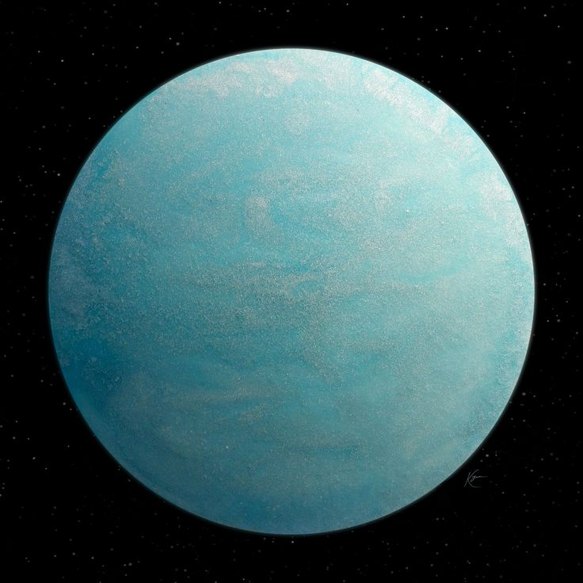
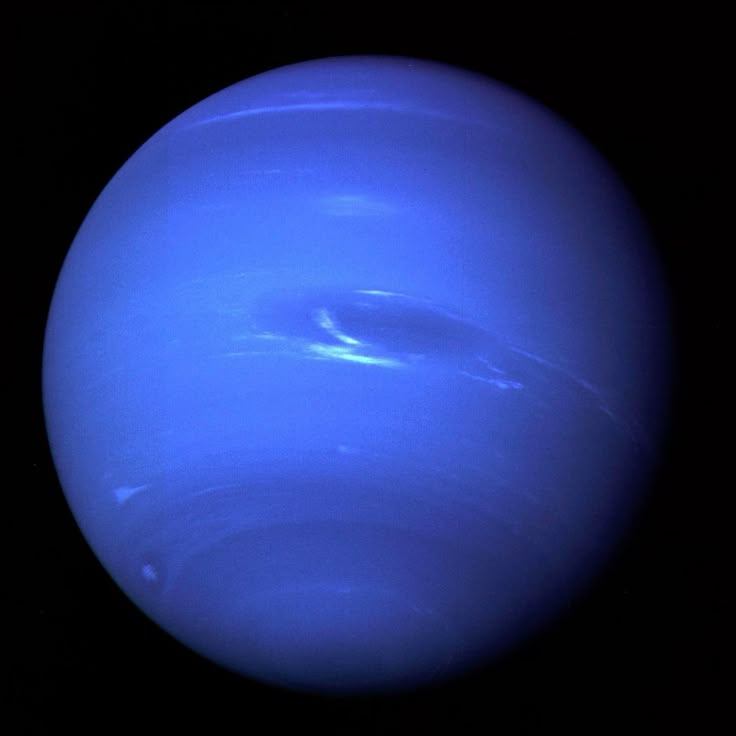

The solar system

The Inner Planets (Terrestrial)
Mercury

Facts
The Swift Planet: It has the shortest orbit, zipping around the Sun in just 88 days.
Extreme Temperatures: Temperatures swing from 430°C to -180°C.
Shrinking World: Mercury is tectonically active and getting smaller.
Sun Proximity: Despite being closest, it is the second hottest planet.
Cratered Surface: It looks very similar to our Moon.
Venus

Facts
The Hottest Planet: A runaway greenhouse effect traps heat at 465°C.
Backward Rotation: Venus rotates in the opposite direction of most planets.
Long Days: A single day lasts longer than a Venusian year.
Crushing Pressure: Air pressure is 90 times higher than Earth's.
Volcanic World: It has more volcanoes than any other planet.
Earth

Facts
The Goldilocks Zone: The only known planet with liquid water on its surface.
Life Sustaining: The only place where life has been confirmed.
Protective Shield: Magnetic field protects us from solar radiation.
Recycled Surface: Plate tectonics help regulate our climate.
Nitrogen-Rich: Our atmosphere contains 21% oxygen.
Mars

Facts
The Red Planet: Reddish hue comes from iron oxide (rust).
Giant Volcanoes: Hosts Olympus Mons, the largest volcano in the solar system.
Grand Canyon: Features Valles Marineris, a massive canyon system.
Thin Atmosphere: Air is mostly CO2 and 100 times thinner than Earth's.
Water Ice: Frozen water exists at its polar ice caps.
The Outer Planets (Gas & Ice Giants)
Jupiter

Facts
The King of Planets: More than twice as massive as all other planets combined.
Great Red Spot: A giant storm larger than Earth.
Shortest Day: Completes one rotation in just under 10 hours.
Mini Solar System: Jupiter has 95 officially recognized moons.
Vacuum Cleaner: Gravity protects inner planets from comets.
Saturn

Facts
Ring Leader: Famous for its prominent ice and rock ring system.
Float Factor: Less dense than water; it would float in a bathtub.
Hexagon Storm: Permanent six-sided jet stream at the north pole.
Moon Variety: Saturn has 82 confirmed moons.
Magnetic Power: Field is 578 times more powerful than Earth's.
Uranus

Facts
Sideways Planet: Rotates on its side with an axial tilt of 98 degrees.
Ice Giant: Composed of water, methane, and ammonia ices.
Blue-Green Tint: Methane gas absorbs red light.
Extreme Seasons: Poles experience 42 years of continuous sunlight.
Faint Rings: Has 13 known dark, narrow rings.
Neptune

Facts
Windiest Planet: Winds reach speeds of over 2,100 km/h.
Deep Blue: Its beautiful color comes from methane gas in the atmosphere.
Great Dark Spot: It has huge spinning storms similar to Jupiter's Red Spot.
The Long Way Round: It takes 165 Earth years to complete one trip around the Sun.
Math Genius: It was the first planet discovered using mathematical calculations!